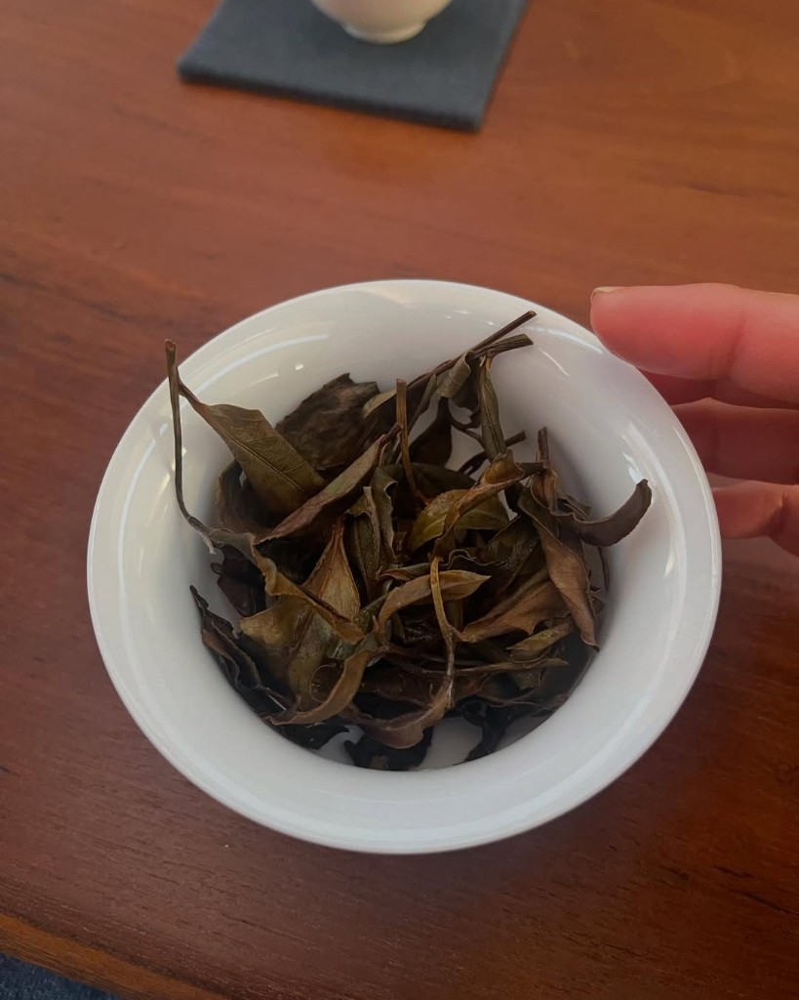
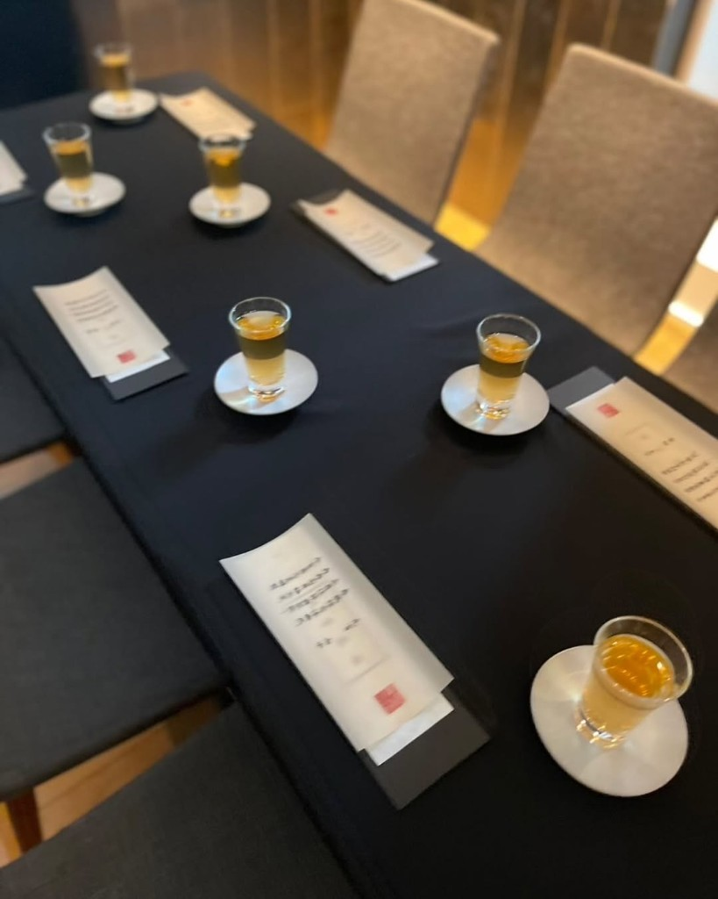
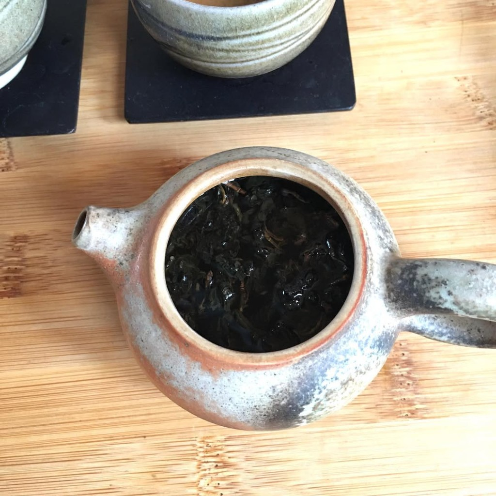
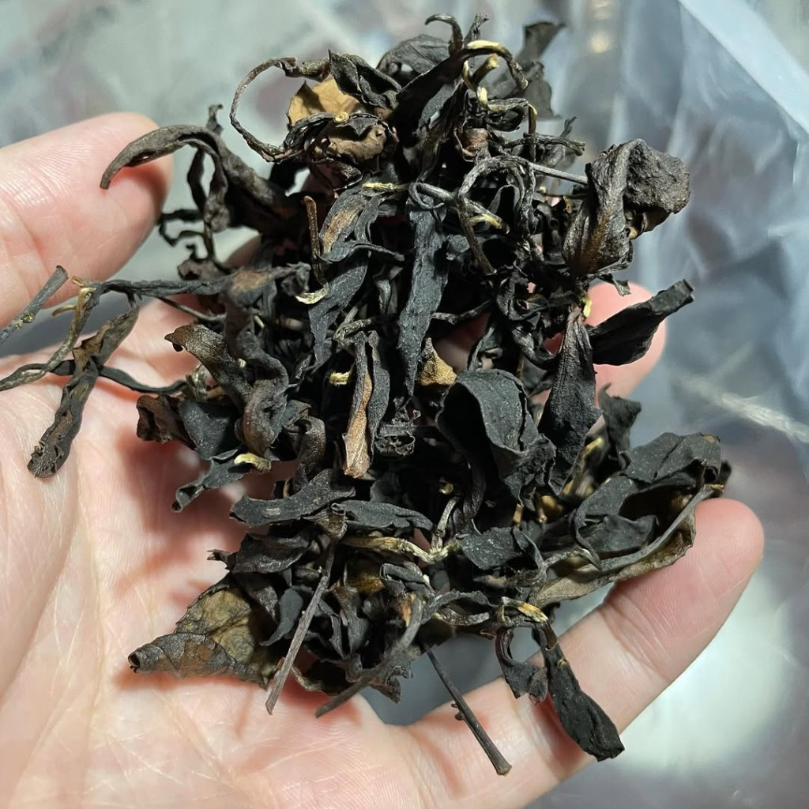
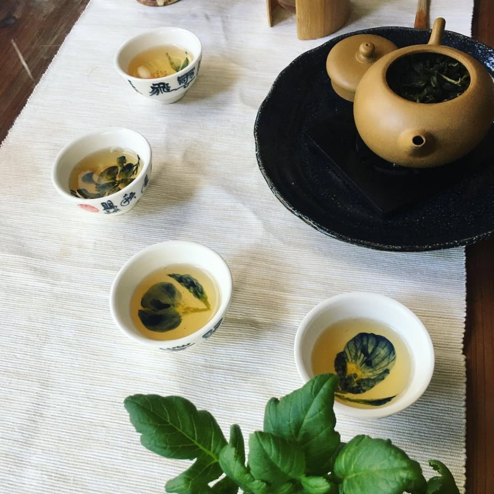
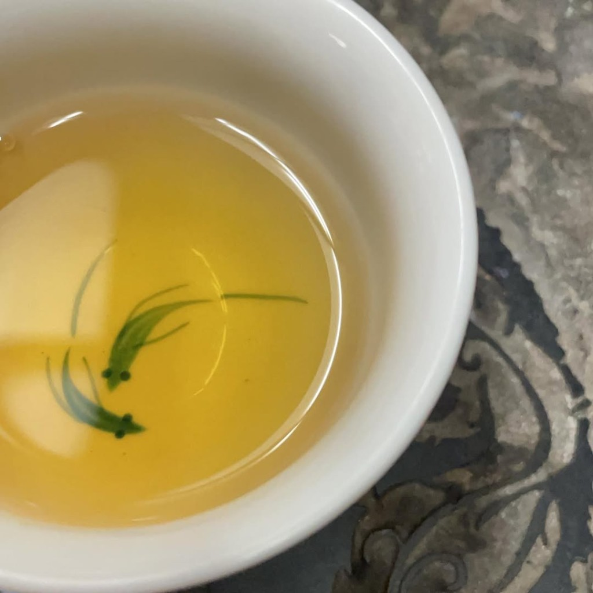
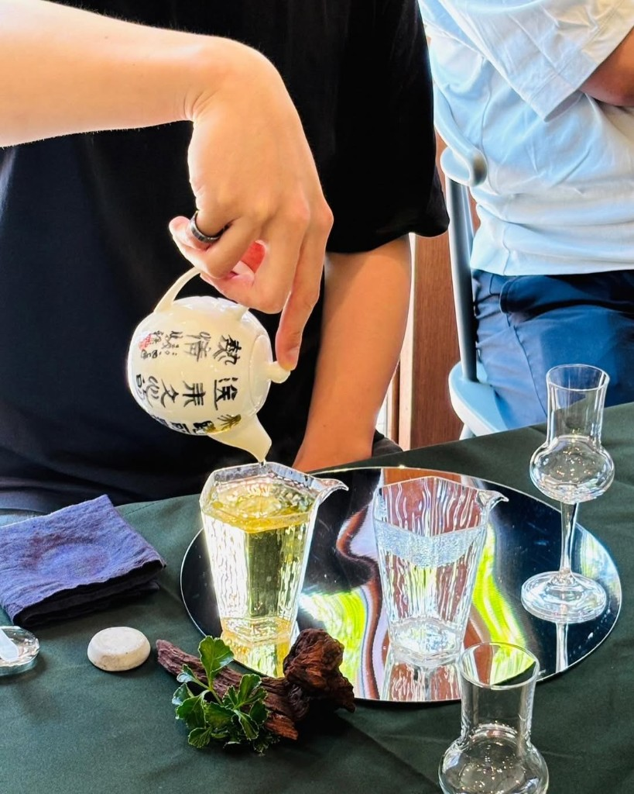

秋田県横手市
駅近で評判の
お好み焼きとやきそば
創業26年の実績
暖簾会加盟店
観光協会推奨店
For
You
こんな方に
おすすめ

- 具材がぎっしり詰まった広島風お好み焼きを食べたい方
- 観光協会推奨店の本場の横手やきそばを味わいたい方
- ランチや仕事帰りの一杯に気軽に立ち寄りたい方
- 鉄板で焼き上げるアツアツの料理を楽しみたい方
- お一人様からご家族連れまで気兼ねなく利用したい方
- 気兼ねなく立ち寄れる空間で食事を楽しみたい方
About あつあつ亭について
秋田県横手市田中町にある
鉄板焼き食堂
秋田県横手市田中町に位置するあつあつ亭は、横手駅前にある創業26年の鉄板焼き食堂です。
名物の広島風お好み焼きや横手風お好み焼き＆横手やきそば暖簾会加盟店として提供する横手やきそばなど、鉄板で焼き上げるアツアツの料理をご提供しています。
お一人様からご家族連れまで気兼ねなくご利用いただけます。

Service
アツアツの
鉄板焼きを

- 本場仕込みの広島風お好み焼き
- 観光協会推奨店の横手やきそば
- 夜限定の豊富な一品料理
- スタッフが目の前で焼くスタイル
気兼ねなく立ち寄れる空間で、皆様のお越しをお待ちしております。
Feature こだわり

鉄板で丁寧に焼き上げる
広島風お好み焼き
キャベツやたっぷりの海鮮、カリッカリの豚肉、薄味に調整された焼きそばなどの具材がぎっしり詰まった一品です。
お客様が自分で焼くのではなく、スタッフが目の前の鉄板で焼いて仕上がったアツアツの状態でテーブルへお届けします。

和風ソースが香る
自慢の横手やきそば
一般社団法人横手市観光協会の推奨店に選ばれた横手やきそばをご提供しています。
太い中華麺に、ウスターソースをベースとして鰹や昆布の魚介ダシで割ったさらっとした和風ソースを絡めた一品で、全国各地から訪れる食通をうならせる味わいです。

豊富な鉄板焼きメニューと
夜の一品料理
米粉を使用したお好み焼き「横手焼き」や「横巻き」のほか、各種焼きそば・焼うどん、夜限定の一品料理まで豊富にご用意しています。
ランチ営業はもちろん仕事帰りの一杯にも最適です。
Recommend Menu おすすめメニュー
広島風お好み焼き
￥800〜
キャベツや海鮮がぎっしり詰まった一品。
種類豊富なトッピングで自分好みの味に。
- ・いか天：￥900
- ・スタミナ：￥900
- ・めんたいこ：￥950
- ・キムチ：￥950
- ・牡蠣：￥1,250
- ・ちから(もち)：￥1,000


横手やきそば
￥550〜
観光協会推奨店の自慢の味。
さらっとした和風ソースと太麺が絡み合います。
- ・横手やきそば 特製：￥600
- ・ぶた焼きそば：￥600
- ・キムチ焼きそば：￥850
- ・ステーキ焼きそば：￥1,600
- ・オムそば：￥780
- ・焼きうどん：￥650
Gallery ギャラリー
{kind=link}
{kind=link}
{kind=link}
{kind=link}
{kind=link}
{kind=link}
Voice お客様の声
Message 代表挨拶
創業26年温かい料理でお迎えします
横手市田中町で創業26年、いつでもお客様を温かくお迎えしてきました。
鉄板で丁寧に焼き上げるアツアツの料理で、心も体も温まっていただきたいと思っております。
皆様のご来店を心よりお待ちしております。

Access 店舗情報
あつあつ亭
- 住所
- 〒013-0024
秋田県横手市田中町２−１９ - 電話番号
- 0182-36-5525
- 営業時間
- 11:30～14:00, 17:00～22:30
- 定休日
- 日曜日